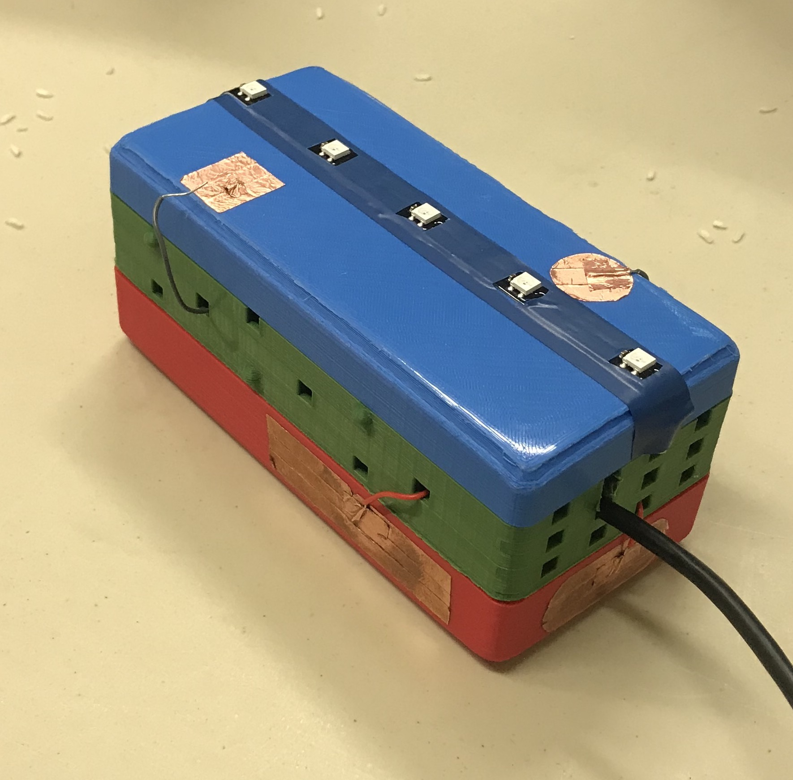

Sonically Touchable
Presented at Goldsmiths Graduation Show 2020 "Chimara Garden", poem: Astrophil and Stella, Sonnet 9 by Philip Sidney performer and contributor: Dr Christina Kapadocha.
Performed at Iklektic "Forms in Flux" 2021, poam: "Nothing at all" by Joan Poee
The Sonic Jacket is a wearable musical instrument that explores musical expression through body touch. Inspired by the composition "Sonically Touchable," it delves into the theme of touch and its varying meanings based on context. During performances, the artist improvises with the Sonic Jacket through a blend of dance and theatrical movements, interpreting touch in three distinct ways: caring, exploratory self-awareness, and violent, unwanted contact.
The composition "Sonically Touchable" uses recorded poem recitations as its sonic material, presenting its concept through the processing and manipulation of spoken words.
Future work aproaches the use of haptic feedback for the enhencemnt of the interaction with the musical instrument.
Blocks' Sounds
This piece has been presented in Goldsmiths University Pop-up Show 2019, Hack and Scratch 2020, and Peckham Digital 2021.
Blocks’ Sound is an interactive installation, which calls participants to compose their own music by positioning little blocks on a specified white area. This installation transforms the traditional musical notation into a playful tactile experience where Blocks are the notes that participants can simply move across the board and alter the synthesis of the score.
The perceptual experience begins from the moment participants hold a block in their hand, generating questions about the sonic feedback of each individual block and the assemblage of blocks on the table at any given time.
Arcade Percussion
Augmenting acoustic instruments with sensors, this 3D-printed rice box has been augmented with movement sensors that create retro synth sounds.
This piece has been presented in Goldsmiths University Pop-up Show 2020.
Draw and Listen
This piece has been presented in Goldsmiths University Pop-up Show 2020.
"Draw and Listen" is an interactive audio-visual installation where participants use physical brushes to create virtual drawings on a projected white canvas using three colors. Each brushstroke generates corresponding sounds, resulting in a unique ambient music composition.
This installation explores the impact of human actions on nature, using the transition of sound from pure to mechanistic to symbolize how simple individual actions can disturb the natural world.